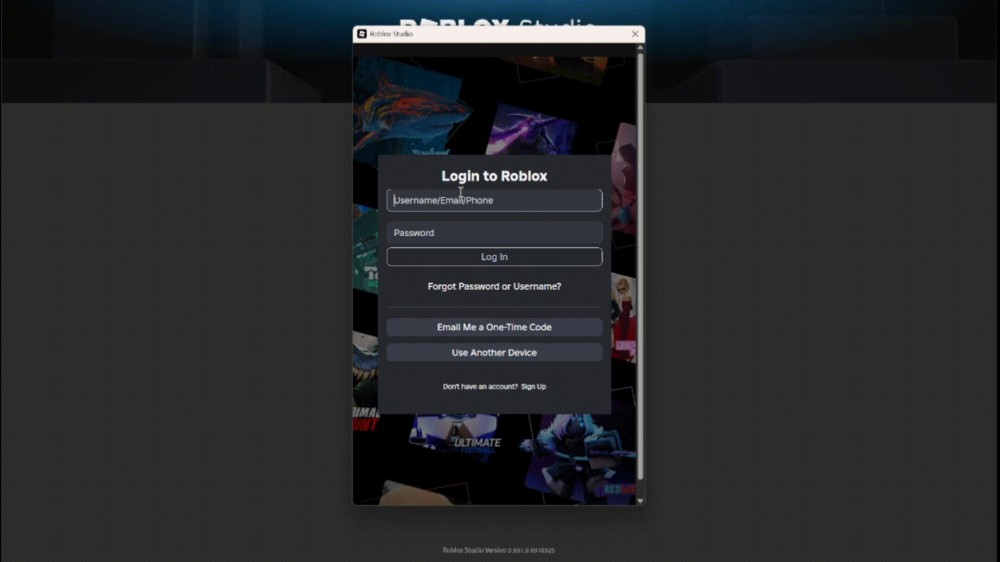

Перейдіть на сайт Roblox Studio, натисніть на кнопку
Start Creating, щоб почати створення. Цей крок
дозволить вам завантажити Roblox Studio на ваш комп'ютер.
Дочекайтеся, поки файл завантажиться, та відкрийте
його після завантаження. Інсталятор Roblox Studio автоматично
відкриється.
Дочекайтесь завершення встановлення Roblox Studio на
ваш комп'ютер. Після завершення встановлення якщо ви ще не увійшли в
свій акаунт, на екрані з'явиться форма для введення логіну та паролю.
Введіть ваш логін та пароль від акаунта Roblox.
Пам'ятайте, що ви можете використовувати ті самі облікові дані, які
використовуєте для входу в Roblox.

Натисніть на кнопку Log In, щоб увійти в свій акаунт Roblox в Roblox Studio. Тепер ви готові
почати створювати ігри або редагувати їх у Roblox Studio.